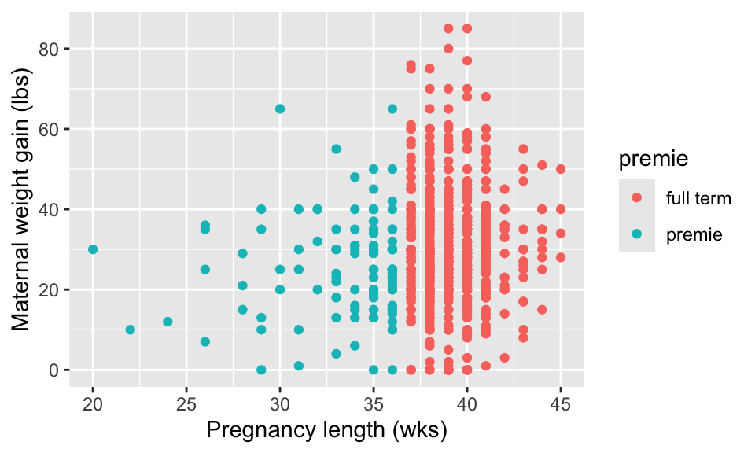

library(dplyr)
library(ggplot2)
library(readr)Lab 05 - Data Visualization II
Setup
Load the packages
The Data
Today we will practice data visualization using data on births from the state of North Carolina. Copy, paste and run the code below to load the data.
nc <- read_csv("https://docs.google.com/spreadsheets/d/e/2PACX-1vTm2WZwNBoQdZhMgot7urbtu8eG7tzAq-60ZJsQ_nupykCAcW0OXebVpHksPWyR4x8xJTVQ8KAulAFS/pub?gid=202410847&single=true&output=csv")The data set that shows up in your Environment is a large data frame. Each observation or case is a birth of a single child. We also call this our “unit of analysis”.
Take a Glimpse
You can see the dimensions of this data frame (# of rows and columns), the names of the variables, the variable types, and the first few observations using the glimpse function. Copy, paste, and run the following in a new code chunk.
glimpse(nc)We can see that there are 1000 observations and 13 variables in this data set. The variable names are fage, mage, mature, etc. This output also tells us that some variables are numbers…some specifically integers <int>, others are numbers with decimals <dbl>. Some of the variables are factors <fct>. It is a good practice to see if R is treating variables as factors <fct>; as numbers <int> or <dbl> (basically numbers with decimals); or as characters (i.e. text) <chr>.
Exercise 1
What type of variable is R considering the variable habit to be? What variable type is visits? (answer with text)
Types of Graphs
We will explore three different types of graphs in this problem set.
scatterplots
boxplots
histogramsScatterplots
Scatterplots allow you to investigate the relationship between two numerical variables. While you may already be familiar with this type of plot, let’s view it through the lens of the Grammar of Graphics. Specifically, we will graphically investigate the relationship between the following two numerical variables in the flights data frame:
weeks: length of a pregnancy on the horizontal “x” axis andweight: birth weight of a baby in pounds on the vertical “y” axis
ggplot(data = nc, aes(x = weeks, y = weight)) +
geom_point()
Let’s view this plot through the grammar of graphics. Within the ggplot() function call, we specified:
- The data frame to be
ncby settingdata = nc - The
aestheticmappingby settingaes(x = weeks, y = weight) - The variable
weeksmaps to thex-positionaesthetic - The variable
weightmaps to they-positionaesthetic.
We also add a layer to the ggplot() function call using the + sign. The layer in question specifies the geometric object here as points, by specifying geom_point().
Finally, we can also add axis labels and a title to the plot like so. Again we add a new layer, this time a labs or labels layer.
ggplot(data = nc, aes(x = weeks, y = weight)) +
geom_point() +
labs(x = "Length of pregnancy (in weeks)", y = "Birth weight of baby (lbs)",
title = "Relationship between pregnancy duration and newborn weight")Exercise 2
Is there a positive or negative relationship between these variables? (text only to answer)
Exercise 3
Make a graph showing weeks again on the x axis and the variable gained on the y axis (the amount of weight a mother gained during pregnancy). Include axis labels with measurement units, and a title. (code only to answer)
Exercise 4
Study the code below, and the resulting graphical output. Note a new argument of color = premie inside the aesthetic mapping. The variable premie indicates whether a birth was early (premie) or went full term. Please answer with text:
**A.** What did adding the argument `color = premie` accomplish?
**B.** How many **variables** are now displayed on this plot?
**C.** What appears to (roughly) be the pregnancy length cutoff for classifying a newborn as a "premie"" versus a "full term". ggplot(data = nc, aes(x = weeks, y = gained, color = premie))+
geom_point() +
labs(x = "Pregnancy length (wks)", y = "Maternal weight gain (lbs)")
Exercise 5
Make a new scatterplot that shows a mothers age on the x axis (variable called mage) and birth weight of newborns on the y axis (weight). Color the points on the plot based on the gender of the resulting baby (variable called gender). Does there appear to be any strong relationship between a mother’s age and the weight of her newborn? (code and text to answer)
Histograms
Histograms are useful plots for showing how many elements of a single numerical variable fall in specified bins. This is a very useful way to get a sense of the distribution of your data. Histograms are often one of the first steps in exploring data visually.
For instance, to look at the distribution of pregnancy duration (variable called weeks), copy, paste and run the following in a new code chunk:
ggplot(data = nc, aes(x = weeks))+
geom_histogram()`stat_bin()` using `bins = 30`. Pick better value with `binwidth`.
A few things to note here:
- There is only one variable being mapped in
aes(): the single numerical variableweeks. You don’t need to compute they-aesthetic: R calculates it automatically. - We set the geometric object as
geom_histogram() - The warning message encourages us to specify the number of bins on the histogram, as R chose 30 for us.
We can change the binwidth (and thus the number of bins), as well as the colors like so.
ggplot(data = nc, aes(x = weeks))+
geom_histogram(binwidth = 1, color = "white", fill = "steelblue")
Note that none of these arguments went inside the aesthetic mapping argument as they do not specifically represent mappings of variables.
Exercise 6
Inspect the histogram of the weeks variable. Answer each of the following with text.
**A.** The y axis is labeled **count**. What is specifically being counted in this case? Hint: think about what each case is in this data set.
**B.** What appears to be roughly the average length of pregnancies in weeks?
**C.** If we changed the binwidth to 100, how many bins would there be? Roughly how many cases would be in each bin?Exercise 7
Make a histogram of the birth weight of newborns (which is in lbs), including a title and axis labels. (code only to answer)
Faceting
Faceting is used when we’d like to create small multiples of the same plot over a different categorical variable. By default, all of the small multiples will have the same vertical axis.
For example, suppose we were interested in looking at whether pregnancy length varied by the maturity status of a mother (column name mature). This is what is meant by “the distribution of one variable over another variable”: weeks is one variable and mature is the other variable. In order to look at histograms of weeks for older and more mature mothers, we add a plot layer facet_wrap(~ mature, ncol = 1). The ncol = 1 argument just tells R to stack the two histograms into one column.
ggplot(data = nc, aes(x = weeks)) +
geom_histogram(binwidth = 1, color = "white", fill = "steelblue") +
facet_wrap(~ mature, ncol = 1)
Exercise 8
Make a histogram of newborn birth weight split by gender of the child. Set the binwidth to 0.5. Which gender appears to have a slightly larger average birth weight? (code and text to answer)
Boxplots
While histograms can help to show the distribution of data, boxplots have much more flexibility, and can provide even more information in a single graph. The y aesthetic is the numeric variable you want to include in the boxplot, and the x aesthetic is a grouping variable. For instance, below we set gender as the aesthetic mapping for x, and gained as the aesthetic mapping for y. This creates a boxplot of the weight gained for mothers that had male and female newborns. Note that the fill argument is not necessary, but sets a color for the boxplots.
ggplot(data = nc, aes(x = gender, y = gained)) +
geom_boxplot(fill = "sienna")For review, these are the different parts of the boxplot: ’
- The bottom of the “box” portion represents the 25th percentile (1st quartile)
- The horizontal line in the “box” shows the median (50th percentile, 2nd quartile)
- The top of the “box” represents the 75th percentile (3rd quartile)
- The height of each “box”, i.e. the value of the 3rd quartile minus the value of the 1st quartile, is called the interquartile range (IQR). It is a measure of spread of the middle 50% of values. Longer boxes indicating more variability.
- The “whiskers” extending out from the bottoms and tops of the boxes represent points less than the 25th percentile and greater than the 75th percentiles respectively. They extend out no more than 1.5 x IQR units away from either end of the boxes. The length of these whiskers show how the data outside the middle 50% of values vary. Longer whiskers indicate more variability.
- The dots represent values falling outside the whiskers or outliers. The definition of an outlier is somewhat arbitrary and not absolute. In this case, they are defined by the length of the whiskers, which are no more than 1.5 x IQR units long.
Exercise 9
Make a boxplot of the weight gained by moms, split by the maturity status of the mothers (mature). Include axis labels and a title on your plot. Is the median weight gain during pregnancy larger for younger or older moms? (text and code)
Exercise 10
Make a boxplot of pregnancy duration in weeks by smoking habit. Is the duration of pregnancy more variable for smokers or non-smokers? (i.e. which group has the greater spread for the variable weeks?). (code and text to answer)
On your own!
For the following, you need to determine which type of plot to use, make the plot, and answer any questions with text. There is a table at the end of this document that can help you determine which plot to use, given the question/types of variables.
Exercise 11
Using a data visualization, visually assess: Is the variable for father’s age (fage) symmetrical, or does it have a skew?
Exercise 12
Using a data visualization, visually assess: (in this sample) is the median birth weight of babies greater for white or non-white mothers (variable called whitemom)?
Exercise 13
Using a data visualization, visually assess: (in this sample) as a mother’s age (mage) increases, does the duration of pregnancy (weeks) appear to decrease?